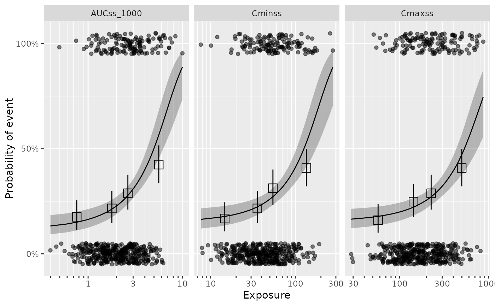

Plot exposure metric selection comparison
plot_er_exp_sel.RdPlot ER curve for each exposure metric and compare them.
Examples
# \donttest{
data(d_sim_binom_cov_hgly2)
ermod_bin_exp_sel <-
dev_ermod_bin_exp_sel(
data = d_sim_binom_cov_hgly2,
var_resp = "AEFLAG",
var_exp_candidates = c("AUCss_1000", "Cmaxss", "Cminss")
)
#> ℹ The exposure metric selected was: AUCss_1000
plot_er_exp_sel(ermod_bin_exp_sel) + xgxr::xgx_scale_x_log10()

# }